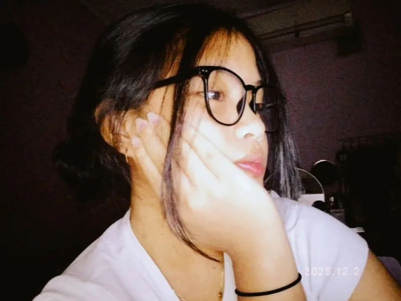
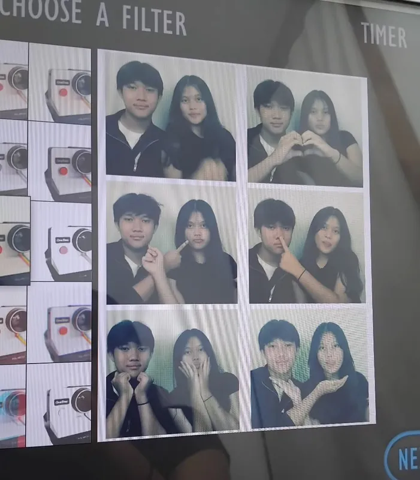

Bab I — Senja
Keola
sebuah surat kecil, ditulis pelan-pelan untukmu
Bab II — Surat
Untuk Keola tersayang,
aku cuma mau bilang terima kasih karena sudah menjadi bagian paling indah dalam hariku. Dari semua candaan kita di chat sampai momen-momen pelayanan bareng, aku selalu bersyukur punya kamu. Aku tahu kita punya tantangan tersendiri, tapi cara kamu peduli dan tetap setia di sampingku itu segalanya buat aku.
Tetaplah jadi Keola yang ceria, yang rambutnya selalu cantik kalau lagi terurai, dan yang punya hati selembut itu.
— aku, yang selalu bersyukur punya kamu
Bab III — Jarak
Jarak
Ada jarak di antara kita.
Tapi kita memilih untuk saling mendekap hati,
meski raga sedang tak saling bersentuhan.
Bab IV — Kenangan
Potongan waktu yang ingin kusimpan
-
01Teduh
-
02Kita
-
03Perjalanan
-
04Anggun
-
05Pantulan
-
06Manis
-
07Ceria
-
08Jenaka
-
09Lembut
-
10Cahaya
Suatu malam
Hal-hal sederhana,
yang ternyata paling kuingat.
Bab V — Tentang Keola
Hati yang tulus
Bagi Keola, kejujuran dan kepercayaan adalah bahasa cinta yang paling nyata. Ia sangat menjunjung tinggi sebuah komitmen, terutama dalam menjaga hubungan jarak jauh kita; baginya, kesetiaan adalah janji suci untuk saling mendekap hati meski raga sedang tak saling bersentuhan.
Di balik sosoknya yang lembut, ia memiliki ketulusan luar biasa dalam melayani, membuktikan bahwa baginya hidup adalah tentang memberi dampak positif bagi sesama. Keola adalah bukti bahwa keindahan sejati muncul dari hati yang tulus, sebuah jiwa yang selalu memilih untuk tetap percaya dan berjuang demi orang yang ia cintai.
Bab VI — Fajar
Kei,
I love you more than words can say.